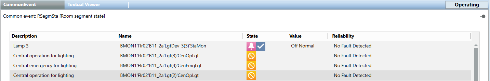
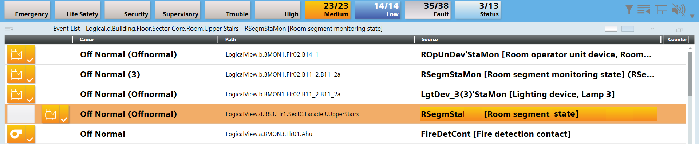

Edit Common Event Object Alarms for Rooms
Scenario: A fault occurs in a room that is recognized by the system with the Common Event object and is displayed in the Summary Bar. All faults belonging to a room are displayed in the Common Event view. This also applies to objects that are not in the system database through Application Modelling.

Prerequisites:
- System Manager is in Operation mode.
Step:
- On the Summary Bar, click an alarm category.
- Alarms are displayed with the filter in the Event Detail Bar.
- Select the alarm in the Event Detail Bar.
- The alarm is highlighted in color.
- In the Source column, select the alarm text.

- The Common Event view is displayed. All the alarms in this segment are displayed. NOTE: There are situations, however, where the Common Event view cannot be opened directly. In this case, you must select the object [RSegmSta] Room segment status.
- Select the Related Items tab.
- Select the Device and corresponding link.
- The corresponding room service tool is opened to undertake additional analysis of faults.